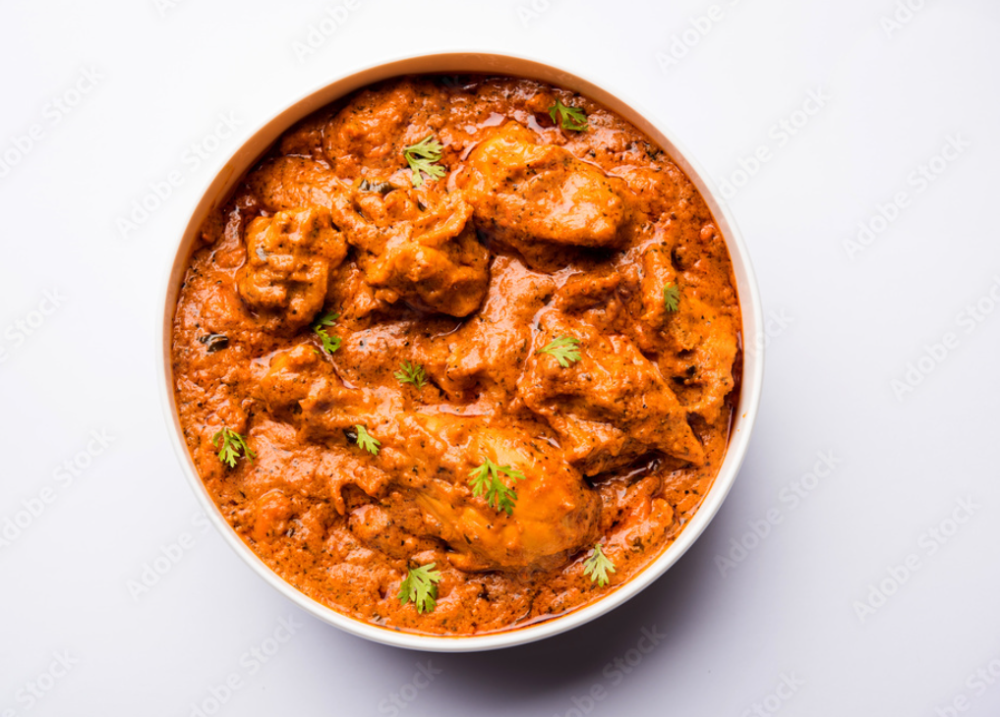

Butter Chicken

Description
A special cuisine from the Northern State of India - Punjab
Despite being a dish from Indian Subcontinent, its recognised as the national dish of United Kingdom.
Steps to Prepare
- Take a kadahi and put some mustard oil
- After the oil heats up, add onion, garlic tomato, black pepper, cumin powder and other masala into the kadahi and cook for atleast 20 min
- Put chicken pieces into it. Cook for another 20 mins
- Put some water according to your requirements, and let it simmer for 5 mins till the water boils
- Serve it hot